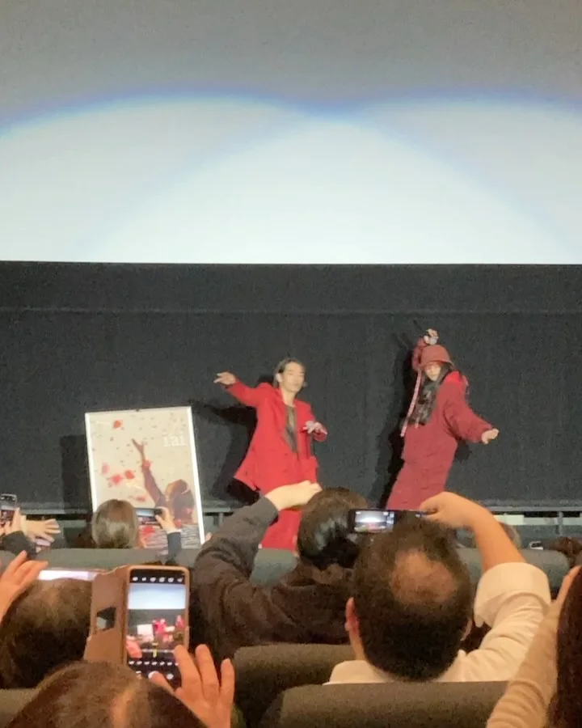
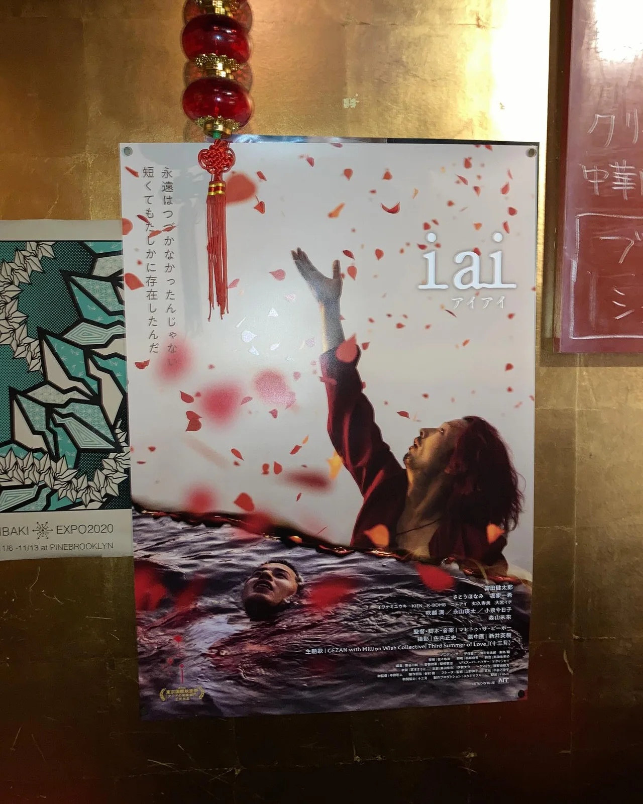

2024年3月10日
めちゃ好きな森山未來さんに会いました。


めちゃ好きな森山未來さんに会いました。 髪の毛サラサラ！ 映画『iai』 森山未來さん好きの方、 GEZAN好きの方、 ロック好きな方、 赤色好きな方、 青春好きな方 にお勧めです！！ ポスター貼ってますので、 ぜひ見に来てください！！ #赤主体の有馬 #中華バル#中華#中華料理#福島区グルメ#路地裏#B級グルメ#中国#チャイニーズ#路地裏チャイニーズ有馬#有馬#シュウマイ#餃子#点心#麻婆豆腐 #森山未來#gezan #iai